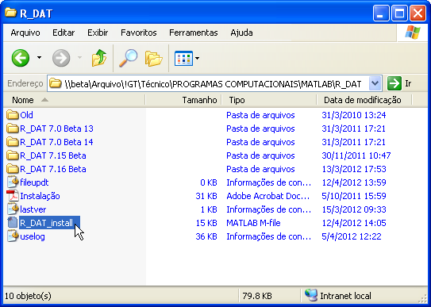
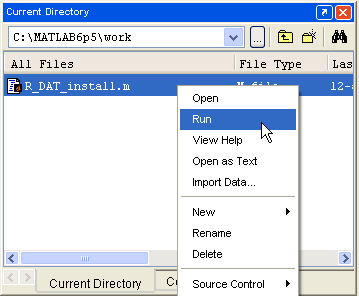
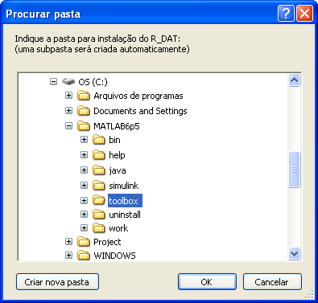
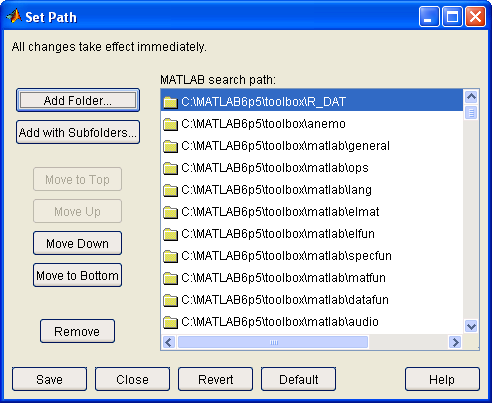
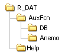

| Instalação
do R_DAT |
|
Instalação
A instalação do R_DAT requer uma pasta com acesso de gravação. Após a instalação, será necessário acesso de gravação apenas à pasta "...\R_DAT\AuxFcn\DB" para a execução do R_DAT. Porém, como o R_DAT pode ser atualizado automaticamente a partir da Rede IPEV, é recomendado que toda a pasta de instalação permita acesso de gravação. Caso se deseje que mais de um usuário utilize o R_DAT no mesmo computador, o acesso deve se estender a todos esses usuários.
Para Engenheiros de Prova do IPEV e alunos do CEV, o acesso à pasta "C:\MATLAB6p5\toolbox\R_DAT"
(versão 6.5) e "C:\Arquivos de programas\MATLAB\R2009a\toolbox\R_DAT"
(versão 7.8) é habilitado automaticamente no logon do
Windows, portanto essas são as pastas recomendadas para instalação.
Caso você não esteja habilitado a acessar e gravar nessas pastas,
entre em contato com a Coordenadoria de Tecnologia da Informação do IPEV.
Para
instalar o R_DAT pela primeira vez a
partir da rede do IPEV:
1- Copie o arquivo "R_DAT_install.m" da pasta "\\beta\Arquivo\!GT\Técnico\PROGRAMAS COMPUTACIONAIS\MATLAB\R_DAT" para uma pasta local do MATLAB (por exemplo a pasta "work"):

2- Abra o MATLAB e execute o arquivo "R_DAT_install.m":

3- Indique
a pasta em que deseja fazer a
instalação. O local recomendado é a pasta “...\toolbox” da instalação atual do MATLAB,
mas é possível indicar outra pasta local:

4- Após a cópia de todos os arquivos, acrescente o caminho da pasta “R_DAT” à
lista de caminhos do MATLAB (menu File ►
Set Path)
e salve a
lista de caminhos (caso o arquivo de caminhos seja protegido, salve a
lista
como um arquivo “pathdef.m” na pasta inicial do MATLAB). Não
acrescente o
caminho das subpastas, pois o R_DAT lida com as mesmas internamente. Para executar o R_DAT sem que
o caminho esteja acrescentado à lista, o usuário
deverá alterar manualmente o "Current Directory" do MATLAB para a pasta onde o R_DAT foi instalado e executar o arquivo "R_DAT.m". As pastas serão acrescentadas automaticamente para aquela sessão de MATLAB.

O
R_DAT utiliza o Toolbox de
anemometria do IPEV, que deve estar no path do
MATLAB. Caso o mesmo não esteja instalado, o R_DAT poderá
instalá-lo internamente (as funções só estarão disponíveis enquanto o R_DAT
estiver sendo executado). Para instalar o Toolbox de anemometria manualmente (recomendado):
5-
Copie a pasta “Anemo”
para um local apropriado dentro
da estrutura do MATLAB e repita o passo 4 para essa pasta.
Local
original: “\\beta\Arquivo\!GT\Técnico\PROGRAMAS
COMPUTACIONAIS\MATLAB\Anemo”.
O local recomendado também é a pasta "...\toolbox" do MATLAB.
Para
instalar o R_DAT manualmente:
1- Localize a pasta "R_DAT" da versão que deseja instalar.
Exemplo: "\\beta\Arquivo\!GT\Técnico\PROGRAMAS COMPUTACIONAIS\MATLAB\R_DAT\R_DAT 7.16 Beta\R_DAT".
2-
Copie toda a pasta “R_DAT” para o local desejado e siga os passos 4 a 5.
Para
atualizar uma instalação prévia a partir
da rede IPEV:
1- O R_DAT pode se atualizar sozinho ao ser inicializado, ou através do menu “Ajuda ► Buscar atualização”, contanto que o usuário tenha acesso à pasta da rede e tenha acesso de gravação às pastas locais do R_DAT. Para forçar uma reinstalação (por exemplo, para sobrescrever uma instalação corrompida), execute novamente o arquivo "R_DAT_install.m" como descrito no item 1 da instalação inicial.
Descrição
das Pastas
A estrutura de
arquivos do R_DAT é a seguinte:

- A pasta “R_DAT”
(raiz) contém os seguintes
arquivos:
R_DAT.fig Arquivo
de
figura do MATLAB. Contém a máscara da janela principal do R_DAT.
R_DAT.m Arquivo
de código fonte do MATLAB. Contém o código fonte da janela principal do
R_DAT.
- Funções
auxiliares;
- Figuras de janelas secundárias;
- Funções de
janelas secundárias.
- A pasta “DB” contém a base de dados do usuário, compreendendo:
- Opções de inicialização;
- Bancos de dados
(aeronaves, mapas);
- Arquivos
temporários;
- Modelos.
|
Nota: A pasta “R_DAT\AuxFcn\DB”
deve permitir acesso de gravação ao usuário, caso contrário o R_DAT não
executará. |
- A pasta “Anemo” contém os arquivos do
Toolbox de anemometria do IPEV. Essa
pasta só será copiada caso esse Toolbox
não tenha sido instalado à parte anteriormente.
- A pasta “Help” contém os arquivos de ajuda do R_DAT em formato html.
|
Nota: A estrutura e
o conteúdo das pastas do R_DAT não
podem ser alterados. Alterações ou omissões podem acarretar problemas
na execução do programa e de suas operações. |
| |
Sobre
o R_DAT |
Interface do
R_DAT |
|